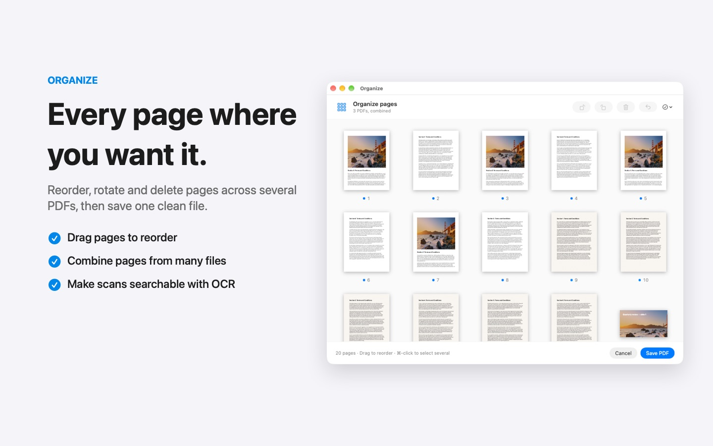

How to merge PDFs on a Mac
Combining receipts, scans and contracts into one PDF should take seconds. Here are two ways that keep your files on your Mac.
Option 1: Preview
- Open the first PDF in Preview and show the sidebar (View › Thumbnails).
- Drag the other PDFs onto the thumbnails, in the order you want.
- Choose File › Export as PDF to save the combined file.
This works, but it is easy to drop a file into the wrong place or to change the original by accident.
Option 2: Sheaf
- Select the PDFs (and images, if you like) in Finder and start dragging them.
- Pause, then move toward Merge and let go.
Sheaf creates one new PDF, with a bookmark for each original file, and leaves the originals untouched. To change the order or remove pages first, choose Organize instead: you can rearrange, rotate and delete pages across several PDFs before saving one clean file.

Download on the Mac App StoreFree download · 7 days unlimited · then a one-time purchase, no subscription
Questions
Can I merge PDFs and JPGs together?
Yes. Sheaf accepts PDFs and images in the same drag and turns them into one PDF.
How do I split a PDF on a Mac?
In Sheaf, drag the PDF and choose Split: by page, by page range or into email-sized parts.